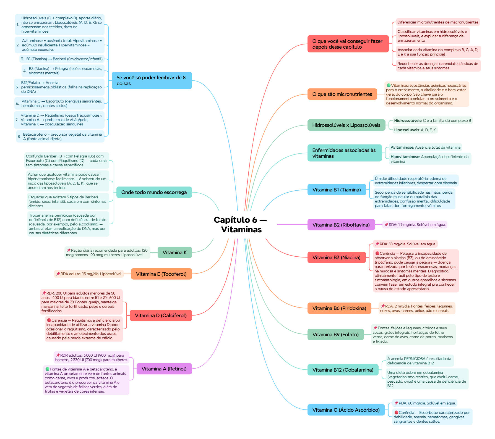

ClinicusMed · Dossiê Clinicus — Padrão de Excelência
Nv. 1
0 XP
🎯 O que você vai conseguir fazer depois desse capítulo
Diferenciar micronutrientes de macronutrientes
Classificar vitaminas em hidrossolúveis e lipossolúveis, e explicar a diferença de armazenamento
Associar cada vitamina do complexo B, C, A, D, E e K à sua função principal
Reconhecer as doenças carenciais clássicas de cada vitamina e seus sintomas
Identificar as principais fontes alimentares de cada vitamina
💊 O que são micronutrientes
Os micronutrientes são nutrientes essenciais que, embora não aportem energia, são imprescindíveis para o organismo — devem ser obtidos através da alimentação. O corpo precisa de pequenas quantidades deles, mas sem eles a química do corpo não funciona.
🟢 Vitaminas: substâncias químicas necessárias para o crescimento, a vitalidade e o bem-estar geral do corpo. São chave para o funcionamento celular, o crescimento e o desenvolvimento normal do organismo.
💧🧈 Hidrossolúveis x Lipossolúveis
Tipo
Vitaminas
Características
Hidrossolúveis
C e a família do complexo B
Solúveis em água, costumam atuar como coenzimas ou precursores de coenzimas. Não se armazenam em quantidades apreciáveis — precisam de aporte DIÁRIO
Lipossolúveis
A, D, E, K
Solúveis em lipídios e substâncias apolares. Não costumam atuar como coenzimas. Se absorvem junto com outros lipídios, exigindo bile e suco pancreático — transportadas ao fígado por via linfática e armazenadas nos tecidos
🧠 Mnemônico ADEK: as 4 lipossolúveis formam a sigla "A-D-E-K" — as únicas que o corpo consegue estocar em quantidade relevante.
💭 Como as hidrossolúveis não se acumulam, a hipervitaminose (acúmulo excessivo) é um risco quase exclusivo das lipossolúveis.
⚖️ Enfermidades associadas às vitaminas
Termo
Definição
Avitaminose
Ausência total da vitamina
Hipovitaminose
Acumulação insuficiente da vitamina
Hipervitaminose
Acumulação excessiva de vitaminas — geralmente das lipossolúveis
🌾 Vitamina B1 (Tiamina)
A vitamina B1 (tiamina) ajuda o corpo a converter os alimentos em energia e colabora com a atividade do coração, do sistema cardiovascular, do cérebro e do sistema nervoso.
📌 RDA: 1,5 mg/dia. Solúvel em água. Fontes: cereais e pães fortificados, peixe, carnes magras e leite.
🔴 Carência — Beriberi: 3 tipos, todos causados pela falta de vitamina B1:
Úmido: dificuldade respiratória, edema de extremidades inferiores, despertar com dispneia
Seco: perda de sensibilidade nas mãos, perda de função muscular ou paralisia das extremidades, confusão mental, dificuldade para falar, dor, formigamento, vômitos
Infantil: insuficiência cardíaca, perda da voz, lesão de nervos periféricos, dispneia, cianose
🥛 Vitamina B2 (Riboflavina)
Junto com outras vitaminas do complexo B, a riboflavina (B2) promove o crescimento saudável e a reparação dos tecidos, além de ajudar a liberar a energia dos carboidratos. Contribui pra pele saudável e produção saudável de eritrócitos.
📌 RDA: 1,7 mg/dia. Solúvel em água. Fontes: cereais, nozes, leite, ovos, vegetais de folhas verdes e carnes magras.
🍞 Vitamina B3 (Niacina)
Junto com outras vitaminas do complexo B, a niacina (B3) ajuda a liberar a energia dos carboidratos, contribuindo pra nervos e pele saudáveis e pro aparelho digestivo saudável.
📌 RDA: 18 mg/dia. Solúvel em água. Fontes: laticínios, frango, peixe, carnes magras, nozes e ovos.
🔴 Carência — Pelagra: a incapacidade de absorver a niacina (B3), ou do aminoácido triptofano, pode causar a pelagra — doença caracterizada por lesões escamosas, mudanças na mucosa e sintomas mentais.
Diagnóstico: clinicamente fácil pelo tipo de lesão e sintomatologia; em outros aparelhos e sistemas convém fazer um estudo integral pra conhecer a causa do estado apresentado.
Tratamento: a pelagra se cura com alimentação adequada — mas isso nem sempre é fácil de obter dadas as condições sociais dos pacientes; recorre-se à inclusão de complexo B por via oral ou parenteral, proteínas e ferro.
🧠 Vitamina B6 (Piridoxina)
A vitamina B6 (piridoxina) é importante para manter a saúde do funcionamento cerebral, para a formação de glóbulos vermelhos, a conversão de proteínas e a síntese de anticorpos — o que serve de apoio ao sistema imunológico.
O folato ajuda na produção dos glóbulos vermelhos e na síntese do DNA — trabalha junto com a vitamina B12 e a vitamina C pra ajudar o corpo a digerir e utilizar as proteínas.
📌 Fontes: feijões e legumes, cítricos e seus sucos, grãos integrais, hortaliças de folha verde, carne de aves, carne de porco, mariscos e fígado.
🧬 Vitamina B12 (Cobalamina)
A vitamina B12 é importante para o metabolismo, a formação dos glóbulos vermelhos e a manutenção do sistema nervoso central — o que inclui o cérebro e a medula espinhal.
📌 Fontes: ovos, carne de boi, carne de aves, mariscos, leite e produtos lácteos. Também é adicionada a produtos fortificados, como cereais.
🔴 Classificação das anemias por deficiência:
A anemia PERNICIOSA é resultado da deficiência de vitamina B12
Uma dieta pobre em cobalamina (vegetarianismo restrito, que exclui carne, pescado, ovos) é uma causa de deficiência de B12
O alcoolismo é uma causa de deficiência de folato
Ambas as deficiências levam a célula a seguir se dividindo sem conseguir se dividir corretamente — a deficiência de cobalamina e folato impede a replicação normal do DNA
🍊 Vitamina C (Ácido Ascórbico)
A vitamina C fomenta um sistema imunitário saudável, ajuda a sarar feridas, conserva os vasos sanguíneos e o tecido conjuntivo, e ajuda na absorção do ferro.
📌 RDA: 60 mg/dia. Solúvel em água. Fontes: frutas cítricas, pimentões verdes, morangos, tomates, brócolis, batatas brancas e batata-doce.
🔴 Carência — Escorbuto: caracterizado por debilidade, anemia, hematomas, gengivas sangrantes e dentes soltos.
👁️ Vitamina A (Retinol)
Os benefícios da vitamina A: preserva a saúde de tecidos especializados como a retina, ajuda o desenvolvimento e saúde da pele e das membranas mucosas, e ajuda o desenvolvimento normal dos dentes e do tecido mole e esquelético.
📌 RDR adultos: 3.000 UI (900 mcg) para homens, 2.330 UI (700 mcg) para mulheres.
🟢 Fontes de vitamina A e betacaroteno: a vitamina A propriamente vem de fontes animais, como carne, ovos e produtos lácteos. O betacaroteno é o precursor da vitamina A e vem de vegetais de folhas verdes, além de frutas e vegetais de cores intensas.
☀️ Vitamina D (Calciferol)
A vitamina D fomenta a absorção do cálcio, essencial para o desenvolvimento de dentes e ossos saudáveis. O próprio corpo produz vitamina D quando se expõe ao sol.
📌 RDR: 200 UI para adultos menores de 50 anos · 400 UI para idades entre 51 e 70 · 600 UI para maiores de 70. Fontes: queijo, manteiga, margarina, leite fortificado, peixe e cereais fortificados.
🔴 Carência — Raquitismo: a deficiência ou incapacidade de utilizar a vitamina D pode ocasionar o raquitismo, caracterizado pelo debilitamento e amolecimento dos ossos causado pela perda extrema de cálcio.
🛡️ Vitamina E (Tocoferol)
Os benefícios da vitamina E: protege as membranas celulares e tecidos do dano ocasionado pela oxidação, ajuda na formação de glóbulos vermelhos e na utilização da vitamina K, e ajuda no funcionamento saudável do sistema circulatório.
📌 RDA adulto: 15 mg/dia. Lipossolúvel. Fontes: milho, nozes, azeitonas, vegetais de folhas verdes, óleos vegetais e gérmen de trigo.
🩹 Vitamina K
A vitamina K é benéfica para a coagulação do sangue.
📌 Ração diária recomendada para adultos: 120 mcg homens · 90 mcg mulheres. Lipossolúvel. Fontes: couve, couve-flor, espinafre e outros vegetais de folhas verdes, além de cereais.
💪 Fixação rápida
✅ O que você deve lembrar
Hidrossolúveis (C e complexo B) = precisam de aporte diário, não se armazenam. Lipossolúveis (A, D, E, K) = se armazenam nos tecidos, risco de hipervitaminose. B1→Beriberi. B3→Pelagra. C→Escorbuto. D→Raquitismo. B12/folato→Anemia (perniciosa/megaloblástica).
⚠️ Erro comum
Trocar as doenças carenciais entre si (Beriberi x Pelagra x Escorbuto x Raquitismo) — cada uma tem sintomas e vitamina-causa específicos. E achar que hipervitaminose pode ocorrer com qualquer vitamina — na prática é quase exclusiva das lipossolúveis (que se acumulam).
⚡ Questão rápida
Por que a hipervitaminose é um risco quase exclusivo das vitaminas lipossolúveis (A, D, E, K)?
Porque as vitaminas lipossolúveis se absorvem junto com outros lipídios e são armazenadas nos TECIDOS do corpo (transportadas ao fígado por via linfática) — permitindo acúmulo ao longo do tempo se a ingestão for excessiva. Já as hidrossolúveis (C e complexo B) não se armazenam em quantidades apreciáveis no organismo; o excesso tende a ser eliminado (geralmente pela urina), por isso exigem aporte diário mas raramente causam acúmulo tóxico. É exatamente essa diferença de armazenamento — tecidual/lipídico x eliminação constante — que explica por que a hipervitaminose é praticamente exclusiva do grupo A-D-E-K.
🧠 Autoexplicação
Por que faz sentido que a deficiência de vitamina B12 E de folato causem o MESMO tipo de problema na divisão celular (levando a anemia)?
A resposta está no papel compartilhado dessas duas vitaminas na síntese do DNA. O folato (B9) participa diretamente da síntese do DNA, sendo essencial pra célula conseguir se replicar corretamente. A vitamina B12 (cobalamina) trabalha em conjunto com o folato nesse processo — sem cobalamina adequada, o metabolismo do folato fica comprometido. Quando falta QUALQUER uma das duas, o resultado fisiológico é o mesmo: a célula (inclusive os precursores dos glóbulos vermelhos na medula óssea) continua tentando crescer e se dividir, mas sem conseguir replicar seu DNA corretamente — resultando em células grandes e disfuncionais (anemia megaloblástica) ou, no caso específico da deficiência crônica de B12, na anemia perniciosa. Por isso, clinicamente, a deficiência de B12 e de folato podem se apresentar de forma parecida — ambas comprometem o mesmo processo fundamental (replicação do DNA), mesmo tendo causas dietéticas diferentes (B12 relacionada a dietas sem produtos animais; folato relacionado, entre outras causas, ao alcoolismo).
⚠️ Onde todo mundo escorrega
Confundir Beriberi (B1) com Pelagra (B3) com Escorbuto (C) com Raquitismo (D) — cada uma tem sintomas e causa específicos
Achar que qualquer vitamina pode causar hipervitaminose facilmente — é sobretudo um risco das lipossolúveis (A, D, E, K), que se acumulam nos tecidos
Esquecer que existem 3 tipos de Beriberi (úmido, seco, infantil), cada um com sintomas distintos
Trocar anemia perniciosa (causada por deficiência de B12) com deficiência de folato (causada, por exemplo, pelo alcoolismo) — ambas afetam a replicação do DNA, mas por causas dietéticas diferentes
Confundir vitamina A (fonte animal) com betacaroteno (precursor vegetal da vitamina A) — não são exatamente a mesma coisa
📚 Se você só puder lembrar de 8 coisas
Hidrossolúveis (C + complexo B): aporte diário, não se armazenam. Lipossolúveis (A, D, E, K): se armazenam nos tecidos, risco de hipervitaminose
B12/Folato → Anemia perniciosa/megaloblástica (falha na replicação do DNA)
Vitamina C → Escorbuto (gengivas sangrantes, hematomas, dentes soltos)
Vitamina D → Raquitismo (ossos fracos/moles); Vitamina A → problemas de visão/pele; Vitamina K → coagulação sanguínea
Betacaroteno = precursor vegetal da vitamina A (fonte animal direta)
🩺 Caso Clínico Progressivo — Idosa Vegetariana Restrita com Fadiga
Vamos acompanhar Dona Marlene, 68 anos, vegetariana estrita há 15 anos, com queixa de cansaço progressivo. O caso evolui em 3 níveis — clica em cada um pra ver como as coisas vão se desenrolando.
🧠 Mapa Mental — Vitaminas
Visão geral do capítulo em formato visual — ideal pra revisão rápida antes da prova. O conteúdo completo, com explicações e exemplos, está no Guia de Estudo.

🃏 Flashcards — SM-2 real + interface Anki
O sistema guarda, no seu navegador, quais cards você já sabe bem e quais precisam voltar mais cedo — cada vez que você avalia um card, ele recalcula quando ele deve voltar.
Cartão 1 / 0Dominados: 0
PERGUNTA
RESPOSTA
✅ Banco de Questões Comentadas
10 questões, do mais básico ao mais puxado. Escolhe uma alternativa, depois clica em "Ver comentário completo" — vale a pena ler até quando você acerta, porque o comentário explica cada alternativa, não só a certa.